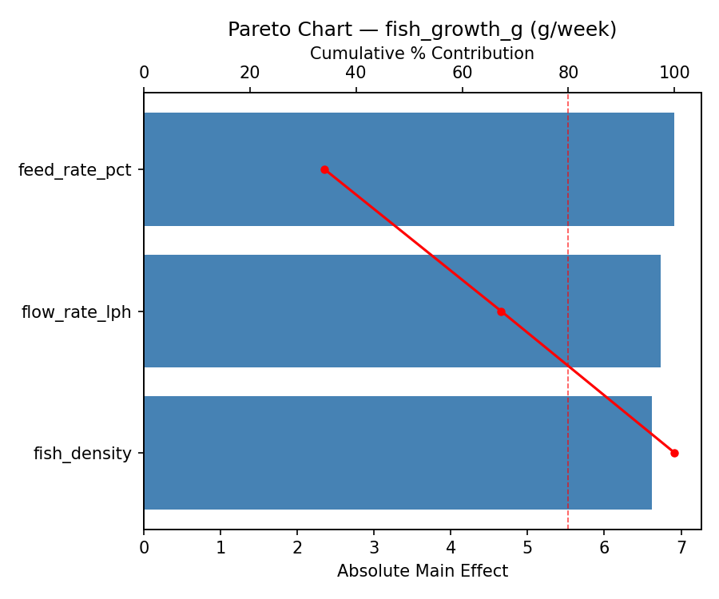
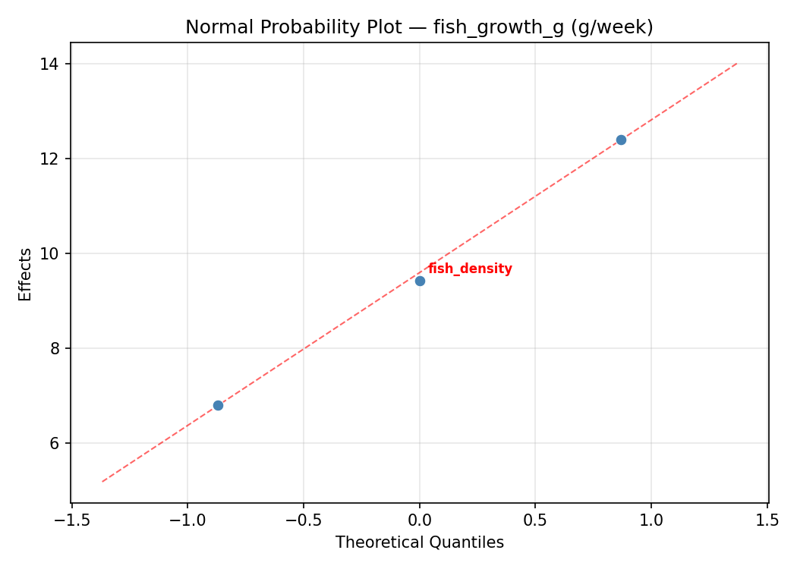
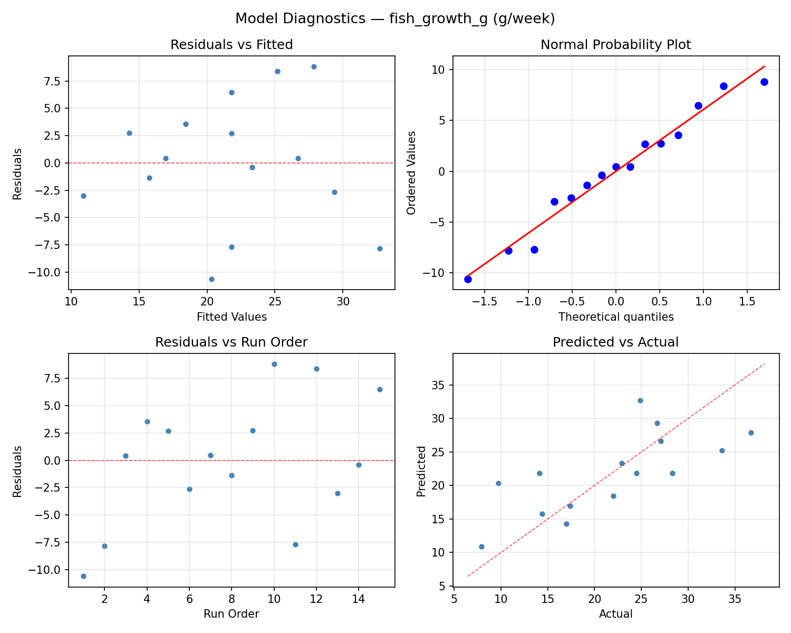
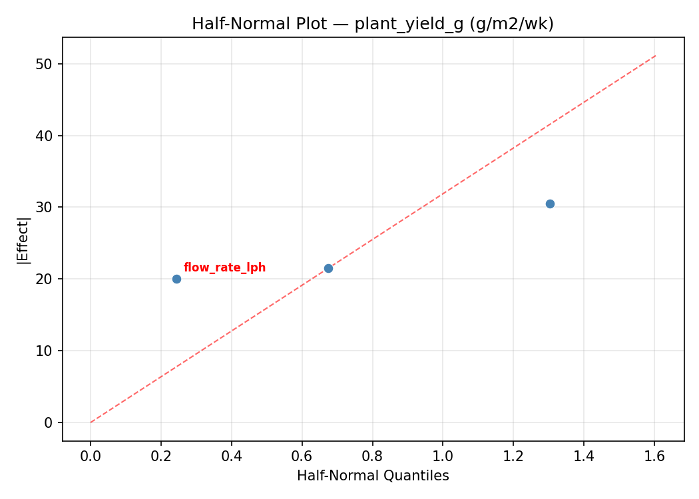
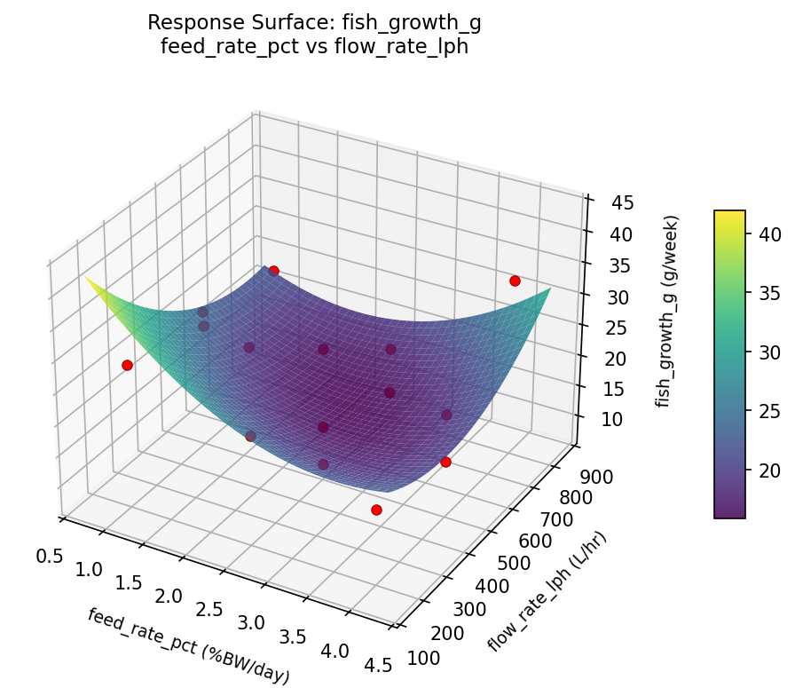
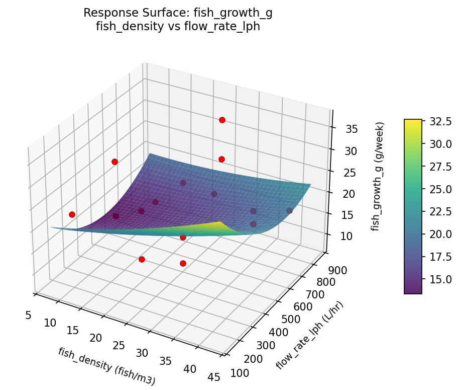
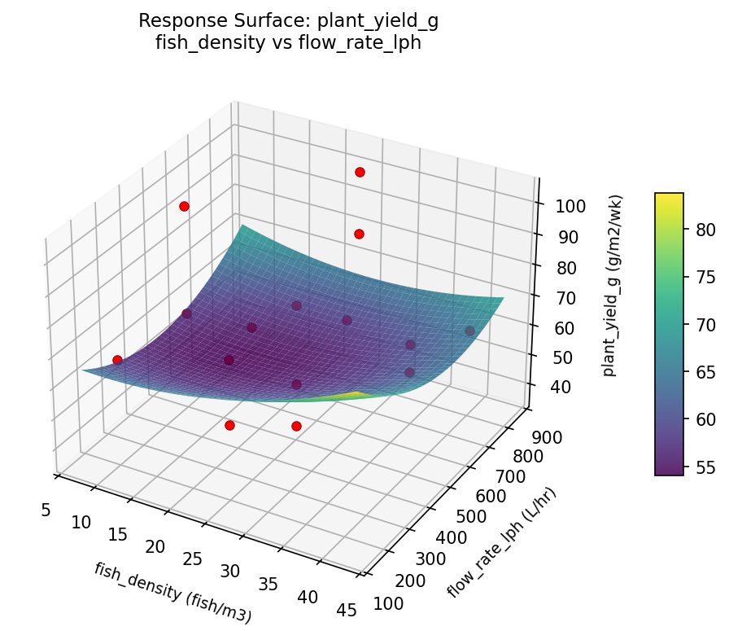

Summary
This experiment investigates aquaponics system balance. Box-Behnken design to maximize fish growth and plant yield by tuning fish density, feeding rate, and water flow rate.
The design varies 3 factors: fish density (fish/m3), ranging from 10 to 40, feed rate pct (%BW/day), ranging from 1 to 4, and flow rate lph (L/hr), ranging from 200 to 800. The goal is to optimize 2 responses: fish growth g (g/week) (maximize) and plant yield g (g/m2/wk) (maximize). Fixed conditions held constant across all runs include fish species = tilapia, plant = basil.
A Box-Behnken design was chosen because it efficiently fits quadratic models with 3 continuous factors while avoiding extreme corner combinations — requiring only 15 runs instead of the 8 needed for a full factorial at two levels.
Quadratic response surface models were fitted to capture potential curvature and factor interactions. The RSM contour plots below visualize how pairs of factors jointly affect each response.
Key Findings
For fish growth g, the most influential factors were flow rate lph (45.2%), fish density (33.0%), feed rate pct (21.8%). The best observed value was 36.7 (at fish density = 25, feed rate pct = 2.5, flow rate lph = 500).
For plant yield g, the most influential factors were flow rate lph (40.8%), fish density (31.2%), feed rate pct (28.1%). The best observed value was 103.0 (at fish density = 25, feed rate pct = 2.5, flow rate lph = 500).
Recommended Next Steps
- Run confirmation experiments at the predicted optimal settings to validate the model.
- Consider whether any fixed factors should be varied in a future study.
Experimental Setup
Factors
| Factor | Low | High | Unit |
|---|
fish_density | 10 | 40 | fish/m3 |
feed_rate_pct | 1 | 4 | %BW/day |
flow_rate_lph | 200 | 800 | L/hr |
Fixed: fish_species = tilapia, plant = basil
Responses
| Response | Direction | Unit |
|---|
fish_growth_g | ↑ maximize | g/week |
plant_yield_g | ↑ maximize | g/m2/wk |
Configuration
{
"metadata": {
"name": "Aquaponics System Balance",
"description": "Box-Behnken design to maximize fish growth and plant yield by tuning fish density, feeding rate, and water flow rate"
},
"factors": [
{
"name": "fish_density",
"levels": [
"10",
"40"
],
"type": "continuous",
"unit": "fish/m3"
},
{
"name": "feed_rate_pct",
"levels": [
"1",
"4"
],
"type": "continuous",
"unit": "%BW/day"
},
{
"name": "flow_rate_lph",
"levels": [
"200",
"800"
],
"type": "continuous",
"unit": "L/hr"
}
],
"fixed_factors": {
"fish_species": "tilapia",
"plant": "basil"
},
"responses": [
{
"name": "fish_growth_g",
"optimize": "maximize",
"unit": "g/week"
},
{
"name": "plant_yield_g",
"optimize": "maximize",
"unit": "g/m2/wk"
}
],
"settings": {
"operation": "box_behnken",
"test_script": "use_cases/135_aquaponics_balance/sim.sh"
}
}
Experimental Matrix
The Box-Behnken Design produces 15 runs. Each row is one experiment with specific factor settings.
| Run | fish_density | feed_rate_pct | flow_rate_lph |
|---|
| 1 | 25 | 1 | 200 |
| 2 | 25 | 2.5 | 500 |
| 3 | 40 | 2.5 | 800 |
| 4 | 40 | 2.5 | 200 |
| 5 | 25 | 2.5 | 500 |
| 6 | 25 | 2.5 | 500 |
| 7 | 10 | 2.5 | 800 |
| 8 | 40 | 1 | 500 |
| 9 | 25 | 1 | 800 |
| 10 | 40 | 4 | 500 |
| 11 | 10 | 2.5 | 200 |
| 12 | 25 | 4 | 800 |
| 13 | 10 | 1 | 500 |
| 14 | 10 | 4 | 500 |
| 15 | 25 | 4 | 200 |
Step-by-Step Workflow
1
Preview the design
$ doe info --config use_cases/135_aquaponics_balance/config.json
2
Generate the runner script
$ doe generate --config use_cases/135_aquaponics_balance/config.json \
--output use_cases/135_aquaponics_balance/results/run.sh --seed 42
3
Execute the experiments
$ bash use_cases/135_aquaponics_balance/results/run.sh
4
Analyze results
$ doe analyze --config use_cases/135_aquaponics_balance/config.json
5
Get optimization recommendations
$ doe optimize --config use_cases/135_aquaponics_balance/config.json
6
Multi-objective optimization
With 2 competing responses, use --multi to find the best compromise via Derringer–Suich desirability.
$ doe optimize --config use_cases/135_aquaponics_balance/config.json --multi
7
Generate the HTML report
$ doe report --config use_cases/135_aquaponics_balance/config.json \
--output use_cases/135_aquaponics_balance/results/report.html
Features Exercised
| Feature | Value |
|---|
| Design type | box_behnken |
| Factor types | continuous (all 3) |
| Arg style | double-dash |
| Responses | 2 (fish_growth_g ↑, plant_yield_g ↑) |
| Total runs | 15 |
Analysis Results
Generated from actual experiment runs using the DOE Helper Tool.
Response: fish_growth_g
Top factors: flow_rate_lph (45.2%), fish_density (33.0%), feed_rate_pct (21.8%).
ANOVA
| Source | DF | SS | MS | F | p-value |
|---|
| Source | DF | SS | MS | F | p-value |
| fish_density | 2 | 145.3480 | 72.6740 | 24.442 | 0.0004 |
| feed_rate_pct | 2 | 63.7902 | 31.8951 | 10.727 | 0.0054 |
| flow_rate_lph | 2 | 376.8130 | 188.4065 | 63.365 | 0.0000 |
| Lack | of | Fit | 6 | 377.9194 | 62.9866 |
| Pure | Error | 2 | 5.9467 | | |
| Error | 8 | 383.8660 | 2.9733 | | |
| Total | 14 | 969.8173 | 69.2727 | | |
Pareto Chart

Main Effects Plot

Normal Probability Plot of Effects

Half-Normal Plot of Effects

Model Diagnostics

Response: plant_yield_g
Top factors: flow_rate_lph (40.8%), fish_density (31.2%), feed_rate_pct (28.1%).
ANOVA
| Source | DF | SS | MS | F | p-value |
|---|
| Source | DF | SS | MS | F | p-value |
| fish_density | 2 | 780.1548 | 390.0774 | 2.281 | 0.1645 |
| feed_rate_pct | 2 | 612.1190 | 306.0595 | 1.790 | 0.2278 |
| flow_rate_lph | 2 | 1908.1548 | 954.0774 | 5.579 | 0.0304 |
| Lack | of | Fit | 6 | 2150.9048 | 358.4841 |
| Pure | Error | 2 | 342.0000 | | |
| Error | 8 | 2492.9048 | 171.0000 | | |
| Total | 14 | 5793.3333 | 413.8095 | | |
Pareto Chart

Main Effects Plot

Normal Probability Plot of Effects

Half-Normal Plot of Effects

Model Diagnostics

Response Surface Plots
3D surfaces fitted with quadratic RSM. Red dots are observed data points.
fish growth g feed rate pct vs flow rate lph

fish growth g fish density vs feed rate pct

fish growth g fish density vs flow rate lph

plant yield g feed rate pct vs flow rate lph

plant yield g fish density vs feed rate pct

plant yield g fish density vs flow rate lph

Multi-Objective Optimization
When responses compete, Derringer–Suich desirability finds the best compromise.
Each response is scaled to a 0–1 desirability, then combined via a weighted geometric mean.
Overall Desirability
D = 1.0000
Per-Response Desirability
| Response | Weight | Desirability | Predicted | Dir |
|---|
fish_growth_g |
1.5 |
|
38.52 1.0000 38.52 g/week |
↑ |
plant_yield_g |
1.5 |
|
115.29 1.0000 115.29 g/m2/wk |
↑ |
Recommended Settings
| Factor | Value |
|---|
fish_density | 10 fish/m3 |
feed_rate_pct | 1 %BW/day |
flow_rate_lph | 200 L/hr |
Source: from RSM model prediction
Trade-off Summary
Sacrifice = how much worse than single-objective best.
| Response | Predicted | Best Observed | Sacrifice |
|---|
plant_yield_g | 115.29 | 103.00 | -12.29 |
Top 3 Runs by Desirability
| Run | D | Factor Settings |
|---|
| #12 | 0.9043 | fish_density=10, feed_rate_pct=1, flow_rate_lph=500 |
| #3 | 0.7655 | fish_density=40, feed_rate_pct=2.5, flow_rate_lph=800 |
Model Quality
| Response | R² | Type |
|---|
plant_yield_g | 0.8272 | quadratic |
Full Multi-Objective Output
============================================================
MULTI-OBJECTIVE OPTIMIZATION
Method: Derringer-Suich Desirability Function
============================================================
Overall desirability: D = 1.0000
Response Weight Desirability Predicted Direction
---------------------------------------------------------------------
fish_growth_g 1.5 1.0000 38.52 g/week ↑
plant_yield_g 1.5 1.0000 115.29 g/m2/wk ↑
Recommended settings:
fish_density = 10 fish/m3
feed_rate_pct = 1 %BW/day
flow_rate_lph = 200 L/hr
(from RSM model prediction)
Trade-off summary:
fish_growth_g: 38.52 (best observed: 36.70, sacrifice: -1.82)
plant_yield_g: 115.29 (best observed: 103.00, sacrifice: -12.29)
Model quality:
fish_growth_g: R² = 0.8106 (quadratic)
plant_yield_g: R² = 0.8272 (quadratic)
Top 3 observed runs by overall desirability:
1. Run #10 (D=0.9407): fish_density=40, feed_rate_pct=4, flow_rate_lph=500
2. Run #12 (D=0.9043): fish_density=10, feed_rate_pct=1, flow_rate_lph=500
3. Run #3 (D=0.7655): fish_density=40, feed_rate_pct=2.5, flow_rate_lph=800
Full Analysis Output
=== Main Effects: fish_growth_g ===
Factor Effect Std Error % Contribution
--------------------------------------------------------------
flow_rate_lph 10.0714 2.1490 45.2%
fish_density 7.3536 2.1490 33.0%
feed_rate_pct 4.8500 2.1490 21.8%
=== ANOVA Table: fish_growth_g ===
Source DF SS MS F p-value
-----------------------------------------------------------------------------
fish_density 2 145.3480 72.6740 24.442 0.0004
feed_rate_pct 2 63.7902 31.8951 10.727 0.0054
flow_rate_lph 2 376.8130 188.4065 63.365 0.0000
Lack of Fit 6 377.9194 62.9866 21.184 0.0458
Pure Error 2 5.9467 2.9733
Error 8 383.8660 2.9733
Total 14 969.8173 69.2727
=== Summary Statistics: fish_growth_g ===
fish_density:
Level N Mean Std Min Max
------------------------------------------------------------
10 4 20.6250 11.8635 9.7000 36.7000
25 7 19.5714 7.4783 7.9000 28.3000
40 4 26.9250 4.7148 22.9000 33.6000
feed_rate_pct:
Level N Mean Std Min Max
------------------------------------------------------------
1 4 23.2500 9.9165 14.4000 36.7000
2.5 7 22.9429 8.3362 9.7000 33.6000
4 4 18.4000 8.0428 7.9000 26.7000
flow_rate_lph:
Level N Mean Std Min Max
------------------------------------------------------------
200 4 17.1000 4.0800 14.1000 22.9000
500 7 27.1714 4.6786 22.0000 36.7000
800 4 17.1500 11.7151 7.9000 33.6000
=== Main Effects: plant_yield_g ===
Factor Effect Std Error % Contribution
--------------------------------------------------------------
flow_rate_lph 23.2143 5.2524 40.8%
fish_density 17.7500 5.2524 31.2%
feed_rate_pct 16.0000 5.2524 28.1%
=== ANOVA Table: plant_yield_g ===
Source DF SS MS F p-value
-----------------------------------------------------------------------------
fish_density 2 780.1548 390.0774 2.281 0.1645
feed_rate_pct 2 612.1190 306.0595 1.790 0.2278
flow_rate_lph 2 1908.1548 954.0774 5.579 0.0304
Lack of Fit 6 2150.9048 358.4841 2.096 0.3577
Pure Error 2 342.0000 171.0000
Error 8 2492.9048 171.0000
Total 14 5793.3333 413.8095
=== Summary Statistics: plant_yield_g ===
fish_density:
Level N Mean Std Min Max
------------------------------------------------------------
10 4 64.7500 26.2599 41.0000 101.0000
25 7 67.2857 19.3797 37.0000 99.0000
40 4 82.5000 15.1767 67.0000 103.0000
feed_rate_pct:
Level N Mean Std Min Max
------------------------------------------------------------
1 4 76.2500 19.8221 57.0000 101.0000
2.5 7 73.4286 22.9046 41.0000 103.0000
4 4 60.2500 16.8795 37.0000 77.0000
flow_rate_lph:
Level N Mean Std Min Max
------------------------------------------------------------
200 4 60.7500 6.9462 51.0000 67.0000
500 7 82.7143 12.8675 66.0000 101.0000
800 4 59.5000 30.2600 37.0000 103.0000
Optimization Recommendations
=== Optimization: fish_growth_g ===
Direction: maximize
Best observed run: #10
fish_density = 25
feed_rate_pct = 2.5
flow_rate_lph = 500
Value: 36.7
RSM Model (linear, R² = 0.3030, Adj R² = 0.1129):
Coefficients:
intercept +21.8133
fish_density -4.2125
feed_rate_pct +0.9625
flow_rate_lph +4.2500
RSM Model (quadratic, R² = 0.5792, Adj R² = -0.1781):
Coefficients:
intercept +29.1000
fish_density -4.2125
feed_rate_pct +0.9625
flow_rate_lph +4.2500
fish_density*feed_rate_pct +1.5250
fish_density*flow_rate_lph +1.8000
feed_rate_pct*flow_rate_lph -1.4000
fish_density^2 -2.1625
feed_rate_pct^2 -5.0125
flow_rate_lph^2 -6.4875
Curvature analysis:
flow_rate_lph coef=-6.4875 concave (has a maximum)
feed_rate_pct coef=-5.0125 concave (has a maximum)
fish_density coef=-2.1625 concave (has a maximum)
Notable interactions:
fish_density*flow_rate_lph coef=+1.8000 (synergistic)
fish_density*feed_rate_pct coef=+1.5250 (synergistic)
feed_rate_pct*flow_rate_lph coef=-1.4000 (antagonistic)
Predicted optimum (from linear model, at observed points):
fish_density = 10
feed_rate_pct = 2.5
flow_rate_lph = 800
Predicted value: 30.2758
Surface optimum (via L-BFGS-B, linear model):
fish_density = 10
feed_rate_pct = 4
flow_rate_lph = 800
Predicted value: 31.2383
Model quality: Weak fit — consider adding center points or using a different design.
Factor importance:
1. flow_rate_lph (effect: 10.2, contribution: 42.6%)
2. fish_density (effect: 8.4, contribution: 35.1%)
3. feed_rate_pct (effect: 5.4, contribution: 22.3%)
=== Optimization: plant_yield_g ===
Direction: maximize
Best observed run: #12
fish_density = 25
feed_rate_pct = 2.5
flow_rate_lph = 500
Value: 103.0
RSM Model (linear, R² = 0.1944, Adj R² = -0.0252):
Coefficients:
intercept +70.6667
fish_density -10.0000
feed_rate_pct +3.2500
flow_rate_lph +5.5000
RSM Model (quadratic, R² = 0.4815, Adj R² = -0.4517):
Coefficients:
intercept +88.3333
fish_density -10.0000
feed_rate_pct +3.2500
flow_rate_lph +5.5000
fish_density*feed_rate_pct +3.2500
fish_density*flow_rate_lph +6.2500
feed_rate_pct*flow_rate_lph +0.2500
fish_density^2 -4.5417
feed_rate_pct^2 -16.5417
flow_rate_lph^2 -12.0417
Curvature analysis:
feed_rate_pct coef=-16.5417 concave (has a maximum)
flow_rate_lph coef=-12.0417 concave (has a maximum)
fish_density coef=-4.5417 concave (has a maximum)
Notable interactions:
fish_density*flow_rate_lph coef=+6.2500 (synergistic)
fish_density*feed_rate_pct coef=+3.2500 (synergistic)
Predicted optimum (from linear model, at observed points):
fish_density = 10
feed_rate_pct = 2.5
flow_rate_lph = 800
Predicted value: 86.1667
Surface optimum (via L-BFGS-B, linear model):
fish_density = 10
feed_rate_pct = 4
flow_rate_lph = 800
Predicted value: 89.4167
Model quality: Weak fit — consider adding center points or using a different design.
Factor importance:
1. fish_density (effect: 20.0, contribution: 36.6%)
2. feed_rate_pct (effect: 18.6, contribution: 34.1%)
3. flow_rate_lph (effect: 16.0, contribution: 29.3%)